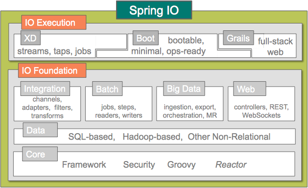

JSR-352, Spring Batch, and You
Created by Michael T Minella / @michaelminella
Who is this guy?
- Author of Pro Spring Batch
- Member of the expert group for JSR-352
- Project lead for Spring Batch
I do a lot of batch ;)
No need to take notes!
- These talks are being recorded...
- These slides and code are on Github
Find it all here

Spring I/O
?
3
JSR-352
Spring Batch's implementation of JSR-352
Spring Batch beyond JSR-352
Expectations
- basic knowledge of spring
- basic knowledge of spring batch
? when you have them
JSR-352
JSR-352 introduces an exciting new Java specification for building, deploying, and running batch applications.
Spring's involvement
Pie graph of EG?
Spring Batch is a leader in the space
Results of the spec?
A picture of the spec next to our documentation
3
- API for building batch components
- A DSL for configuring batch components
- A contract of how batch components interact
High level differences
Spring Batch Job
<job id="personJob">
<step id="step1">
<tasklet>
<chunk commit-interval="5"
reader="itemReader"
processor="itemProcessor"
writer="itemWriter" />
</tasklet>
</step>
</job>
JSR-352 Job
<job id="personJob">
<step id="step1">
<chunk item-count="5">
<reader ref="itemReader"/>
<processor ref="itemProcessor"/>
<writer ref="itemWriter"/>
</chunk>
</step>
</job>
<!-- Spring Batch -->
<job id="personJob">
<step id="step1">
<tasklet>
<chunk commit-interval="5"
reader="itemReader"
processor="itemProcessor"
writer="itemWriter"/>
</tasklet>
</step>
</job>
<!-- JSR-352 -->
<job id="personJob">
<step id="step1">
<chunk item-count="5">
<reader ref="itemReader"/>
<processor ref="itemProcessor"/>
<writer ref="itemWriter"/>
</chunk>
</step>
</job>
?
Dependency Injection
- Foundational technology of Spring Batch
- Not required with JSR-352
References in JSR-352
<job id="personJob">
<step id="step1">
<chunk item-count="5">
<reader ref="itemReader"/>
<processor ref="itemProcessor"/>
<writer ref="itemWriter"/>
</chunk>
</step>
</job>
References point to 1 of 3 places
- Spring bean
- batch.xml definition
- The class itself
Spring bean
batch.xml
<batch-artifacts xmlns="http://xmlns.jcp.org/xml/ns/javaee">
<ref id="itemReader" class="org.sf.jsr.demo.ItemReader" />
<ref id="itemProcessor" class="org.sf.jsr.demo.ItemProcessor" />
<ref id="itemWriter" class="org.sf.jsr.demo.ItemWriter" />
</batch-artifacts>
The class itself
<job id="personJob">
<step id="step1">
<chunk item-count="5">
<reader ref="org.sf.jsr.demo.ItemReader"/>
<processor ref="org.sf.jsr.demo.ItemProcessor"/>
<writer ref="org.sf.jsr.demo.ItemWriter"/>
</chunk>
</step>
</job>
Composed interfaces vs Abstract classes
// Spring Batch
public interface ItemReader<T> {
T read() throws Exception;
}
public interface ItemStream {
void open(ExecutionContext ec) throws ItemStreamException;
void update(ExecutionContext ec) throws ItemStreamException;
void close() throws ItemStreamException;
}
// JSR-352
public interface ItemReader {
public void open(Serializable checkpoint) throws Exception;
public void close() throws Exception;
public Object readItem() throws Exception;
public Serializable checkpointInfo() throws Exception;
}
public abstract class AbstractItemReader implements ItemReader {
public void open(Serializable checkpoint) throws Exception { }
public void close() throws Exception { }
public abstract Object readItem() throws Exception;
public Serializable checkpointInfo() throws Exception {
return null;
}
}
Step Processing Models
Image of job with both tasklet and chunk processing
Interfaces
Batchlet = StoppableTasklet
Hello world!
Chunk processing
Spring Batch
Old sequence diagram
Real Spring Batch chunking
New sequence diagram
JSR-352
Old sequence diagram
Chunk based interfaces
- ItemReader
- ItemProcessor
- ItemWriter
Checkpoints
- Item
- Timeout
- Custom
Listener interfaces
- JobListener
- StepListener
- ChunkListener
- SkipListener
- RetryListener